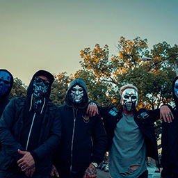
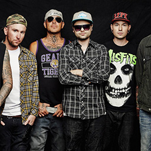

Discography
Hollywood Undead hail from the streets of Hollywood, California, mixing brash hip-hop, rock, and minor metalcore touches with cocky posturing. With their colorful pseudonyms and unique hockey goal tender-inspired masks, the band debuted in 2008 with Swan Songs, but didn't hit their commercial stride until the release of their 2011 sophomore effort, American Tragedy, which cracked the Top Ten on the Billboard 200 chart. Subsequent outings like Notes from the Underground (2013) and Day of the Dead (2015) performed just as well, if not better, cementing the group's reputation as one of rapcore's leading lights. Hollywood Undead's fifth record is titled Five (or V), and was released on October 27, 2017. The first single from the album, called "California Dreaming", was made available July 24, 2017. At the moment, the latest album New Empire vol.1 was released on February 14, 2020.
American Tragedy
is the second studio album by American rap rock band Hollywood Undead. Production for the album began following the induction of Daniel Murillo into the band in early 2010 and lasted until December. Don Gilmore and Ben Grosse, who helped produce the band's debut album, Swan Songs (2008), also returned to produce the album along with several other producers including Kevin Rudolf, Sam Hollander, Dave Katz, Griffin Boice, Jeff Halavacs, and Jacob Kasher. The album is musically heavier and features darker lyrical content than the band's previous effort. Originally set to release in March, American Tragedy was released on April 5, 2011 in the United States and was released on various other dates that month in other countries. A remix of the album, American Tragedy Redux, (which included new song I Don't Wanna Die) was released on November 21, 2011.Notes from the Underground
is the third studio album by American rap rock band Hollywood Undead. Originally set to release in Summer 2012, Notes from the Underground was released on January 8, 2013 in the United States and Canada. The album charted at No. 2 on the Billboard 200 with over 53,000 copies sold in its first week, making it their highest charting album to date, despite its predecessor American Tragedy selling around 67,000 copies in its first week. The album has spawned a generally positive reception.Day of the Dead
is the fourth studio album by American rap rock band Hollywood Undead. Originally set to be released October 2014, Day of the Dead was released March 31, 2015, on Interscope Records.Five
is the fifth studio album by American rap rock band Hollywood Undead. It was released on October 27, 2017 through MDDN and BMG. It is the first album to not feature Matthew "Da Kurlzz" Busek who departed from the band in early 2017. It is also the first release for BMG Rights Management since they departed from Interscope Records, successor of A&M Octone Records, its first label they signed, after release of Day of the Dead. The album features guest vocal appearances from B-Real.New Empire, Vol. 1
is the sixth studio album by American rap rock band Hollywood Undead. It was released on February 14, 2020 through Dove & Grenade Media and BMG and was produced by Matt Good.Biography
The band consists of Charlie Scene, Danny, Funny Man, J-Dog, and Johnny 3 Tears. The band members use pseudonyms and wear masks to display a creative side, not to hide their identities as first assumed. They perform live without the masks on.
The band originated in 2005 from a song titled "The Kids" that Aron Erlichman (Deuce) and Jorel Decker (J-Dog) posted on the band's MySpace profile to positive reviews, leading them to form the group Hollywood Undead with their friends "Shady" Jeff Philips, George Ragan (Johnny 3 Tears), Jordon Terrell (Charlie Scene), Dylan Alvarez (Funny Man), and Matthew St. Claire (Da Kurlzz). In an interview with Shave magazine, J-Dog explained that when forming the band "Whoever was in the room at the time and played an instrument was in the band."
Charlie Scene
Jordon Terrell was born in Burbank, California on September 3, 1985. He knew future bandmate Funny Man from a young age, and they hung out very regularly growing up. Charlie is featured in almost every song from the band and usually raps about partying, girls, drugs, drinks and kicking ass, although he has also written verses about emotional, strong thoughts. He is classified as the "gangster" of the band. He appeared at the Family Values festival, which also featured Jonathan Davis and his band Korn.Danny
Daniel Murillo is one of the current vocalists for Hollywood Undead, replacing Deuce since early 2010. He began to tour with them prior to his official introduction to the band in mid-2008, filling in for Deuce while he was absent.
Funny Man
Dylan Peter Alvarez is a big live favorite of the band due to his lively performances and crowd hyping. He has been known to jump into the crowd, often be shirtless and occasionally not wear pants. Although he isn't as frequently featured on songs that much like Charlie, J-Dog or Johnny his songs are about partying, drinking, women, and having a good time. He very rarely appears on serious tracks.J-Dog
Jorel Decker was born in Los Angeles, California on May 1, 1984. His mother was, as J-Dog describes "a hippie" and his father was a truck driver, and insisted on Jorel becoming a truck driver later on in life as well. He first met future bandmate Johnny 3 Tears when he was very young, but they did not like each other when they first met.He grew up with Deuce and hung out regularly with Charlie Scene's older brother, Jake Terrell.
His first musical interest was when his mom took him to see the British band "The Who" live when he was 13, and it motivated him to start making music, and the bass player of the band specifically made him have a particular interest in playing bass.
Johnny 3 Tears
George Arthur Ragan was born in Los Angeles, California on June 24, 1981. He first met future band mate J-Dog when he was very young, but they didn't like each other when they first met. However, years later, they ended up in the same band.
He used to date a girl named Carly, along with a few others before meeting a woman named Asia. They have a daughter together, named Ava Ragan and are married since January 19, 2018. Asia recently announced on her Instagram that they are going to have another baby in November.
He lived in California almost all his life, most recently in Huntington Beach, before ultimately moving to Nashville, Tennessee with his family.
Photo





Video
All videos from official YOUTUBE Hollywood Undead chanel.